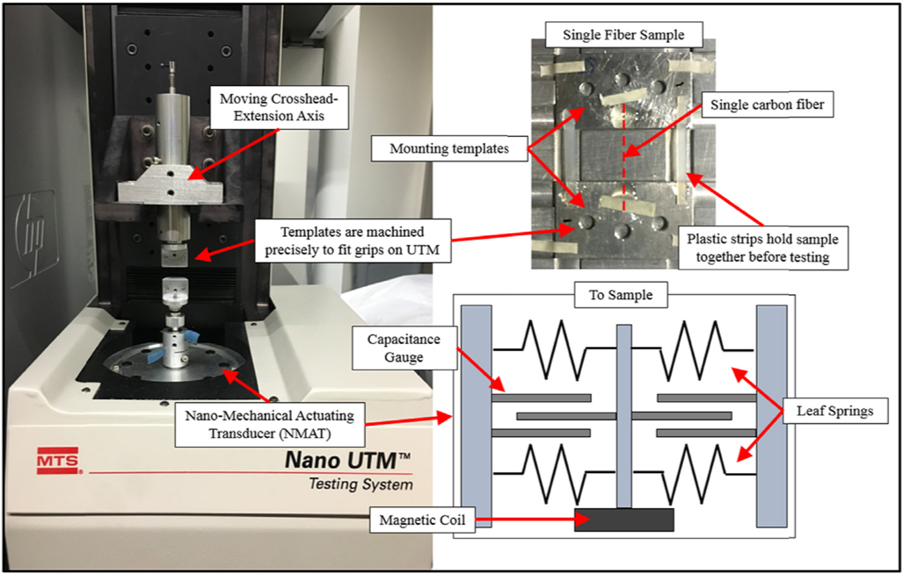
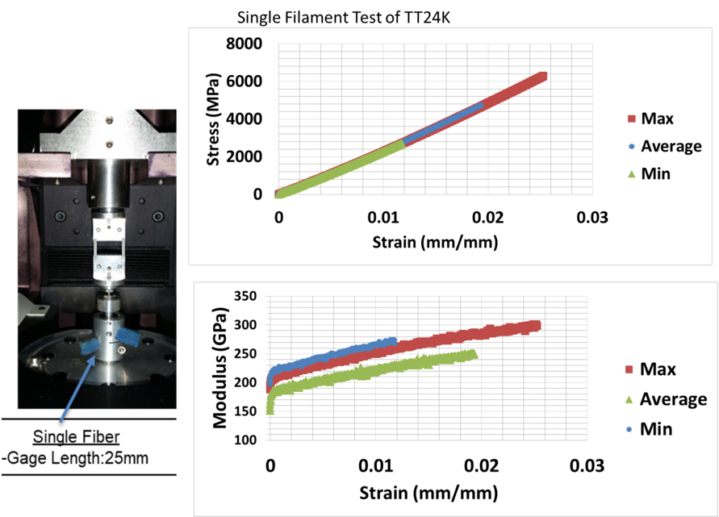
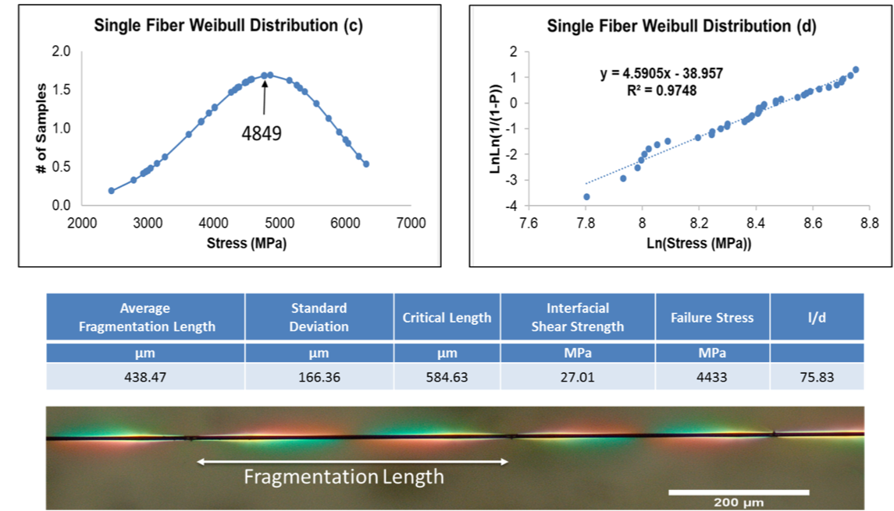
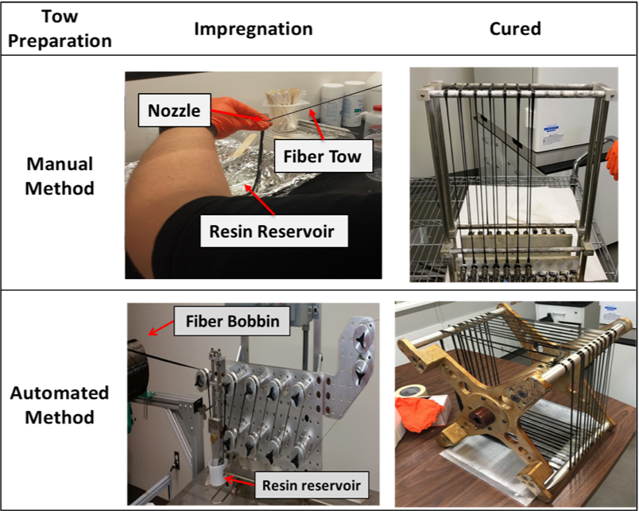
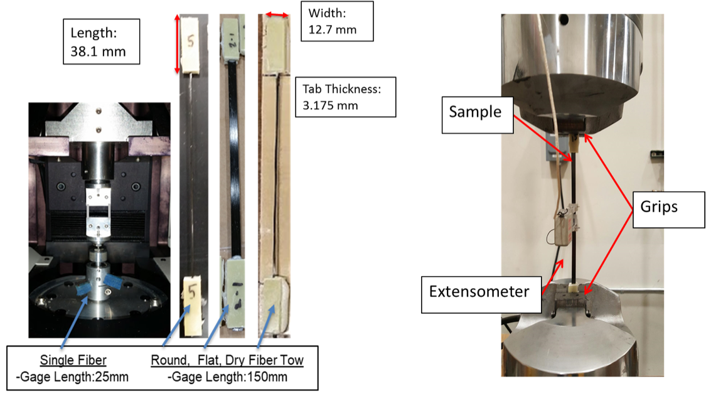
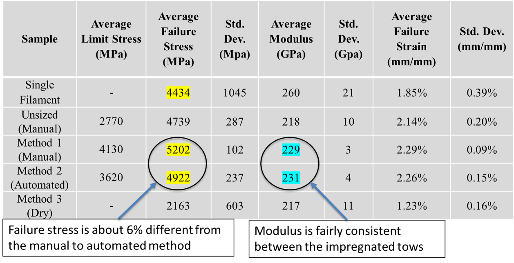
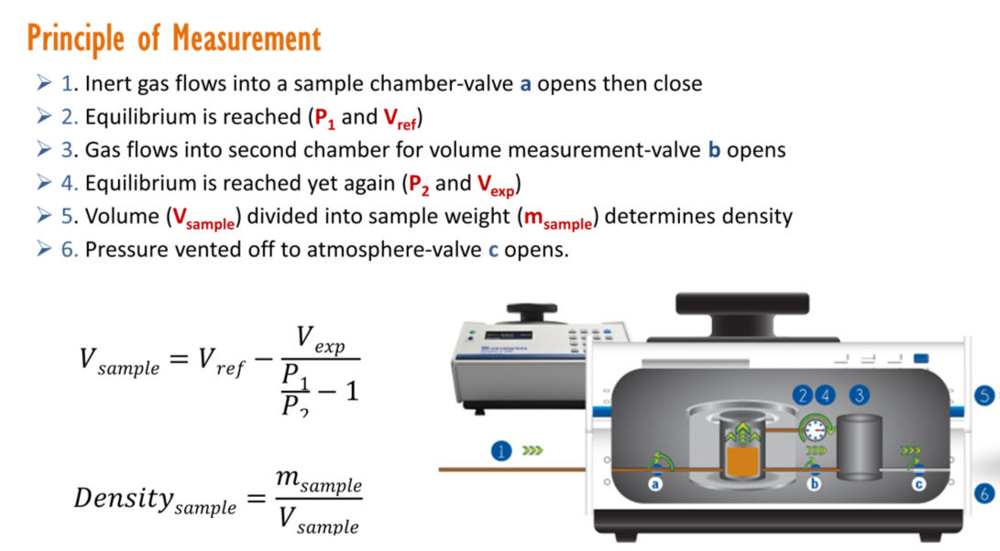

Single Fiber, Fiber Interface, and Fiber Tow Characterization
Facility: Science and Engineering Research Facility (SERF)
Single Fiber Testing


Commercial Carbon Fiber
Single Fiber Mechanical and Interfacial Properties
Example setup of fiber infusion using Manual and Automated methods
Tensile Testing Process
Comparison of Mechanical Properties of Single Filament, Manual, Automated, and Dry methods
Gas Pycnometer
